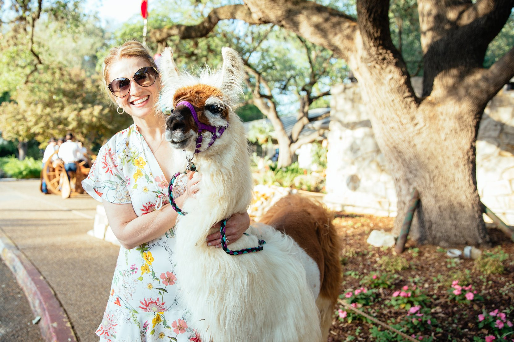
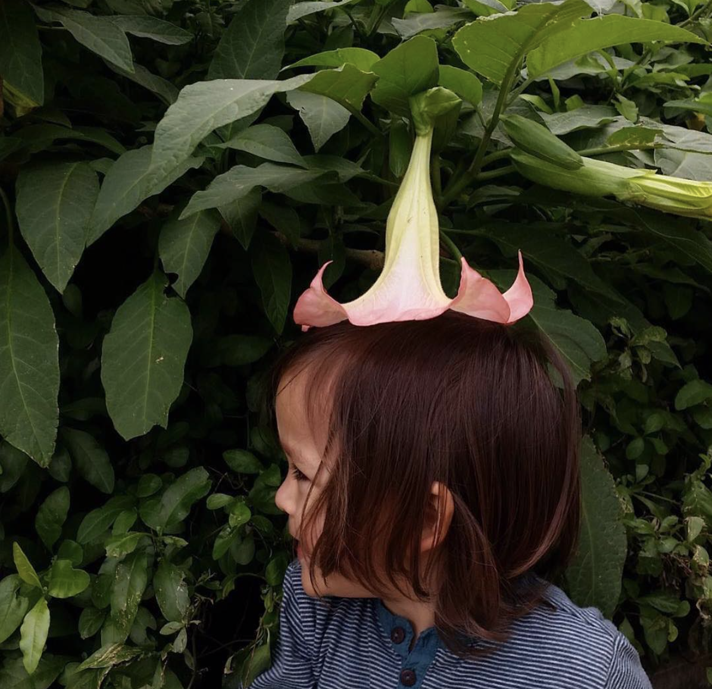

Zilker Botanical Garden | Austin, TX
- read the full case study
- | case study

source: unknown (sorry, y'all)
The Zilker Community
-
Visitors are drawn to Zilker for more than its gardens.
-
Whether you’re just visiting or you’re 20-years into the Bamboo Club, Zilker is just as much an Austin landmark as the State Capitol.
The Zilker community deserves a web presence that reflects their commitment to preserving some of Austin’s uniquely curated green spaces.
- | insights

source: Facebook / Zilker Botanical Garden

source: Facebook / Zilker Botanical Garden
Zilker 2.0
- | solution

source: Instagram / Zilker Botanical Garden